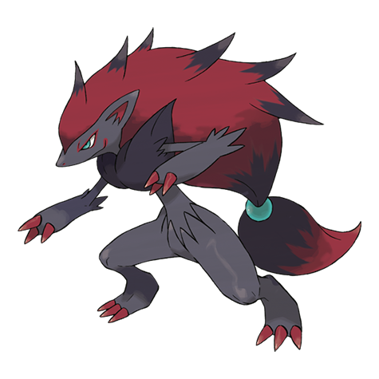
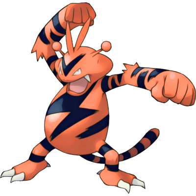
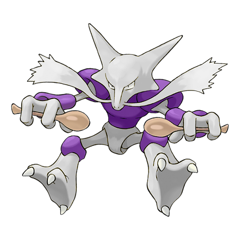

Kairiki Illusion Minigame
Kitsune
Practice the illusion of Kitsune Terror. Walk against the Kairiki ground punches to avoid get hit by the shockwave.



Practice the illusion of Kitsune Terror. Walk against the Kairiki ground punches to avoid get hit by the shockwave.